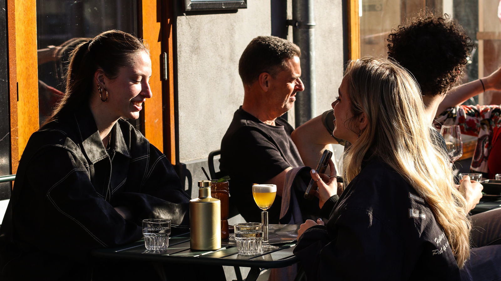
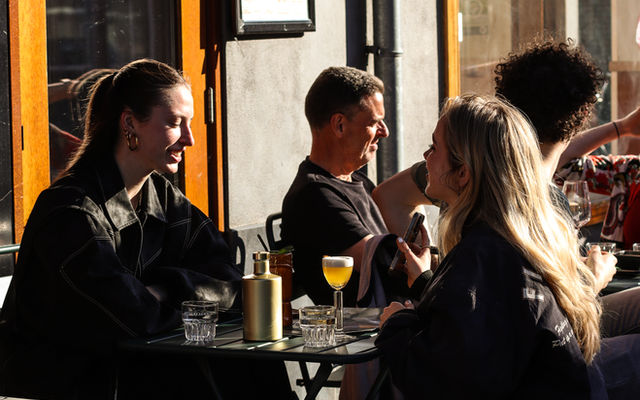

Three hand-picked Utrecht bars, three signature cocktails, tables reserved — just show up. Departs daily · €29,95 per person.
1 route · €29,95 per person · departs daily
★ 4.4 on Google · ★ 4.5 Trustpilot · 80,000+ walks booked

WOGO's cocktail walk through Utrecht is a bar crawl through the centrum, upgraded: three of the city's most surprising cocktail bars, hand-picked by us, with a table reserved and a signature cocktail waiting at each one. No guide, no group of strangers — you get a digital route map and walk the city at your own pace.
The route winds through Utrecht's city centre, from creative cocktail culture to vibrant social hotspots — one stop feels like a small tasting journey, inspired by travel and bold flavours. The bars are a short walk apart, there's a mocktail option at every stop, and unlike our other cities, Utrecht departs every single night — so a spontaneous night out is always on.
The same formula guests love in Amsterdam and Rotterdam — now every night in Utrecht.
Rotterdam has three routes to choose from — local favourites, hidden gems and a premium gin walk. Same formula, different city.
Explore Rotterdam →We coordinate the bars, the timing and the tables — you bring the crew. Group packages currently run in Amsterdam and Rotterdam; planning a Utrecht group night? Contact us and we'll see what's possible.
Give a night they'll talk about. Any route, any city — delivered instantly by email.
The city's waiting — tonight works too.
View dates →